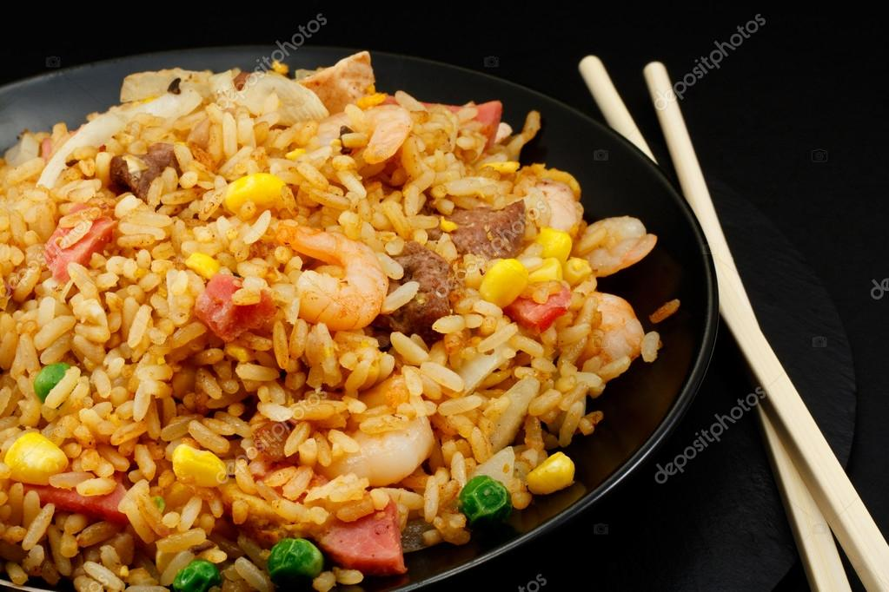

Fried Rice

Description
A combination of eggs rice and vegetables to make a nice side dish or a balanced meal
Ingredients
- 3 Eggs
- 270 Grams(dry) of any rice (leftover white rice works best)
- 1 Large carrot diced
- 1 Bunch of green onions, diced
- 1 Cup of frozen peas, or fresh
- 3 TBSP butter/margarine
- 3 TBSP high heat cooking oil (canola, vegetable, peanut)
- 1 TBSP (14g) white sugar
- 3 TBSP (42g) soy sauce
- 1 TBSP (12g) white vinegar
- 3 Cloves minced garlic (powdered can work too)
- 1 TBSP grated ginger (powdered can work too)
Steps
- Scramble 3 eggs over medium heat, using 3 TBSP of butter to grease the pan, finely chop into small pieces
- Cook the 270g of rice according to the directions on the bag, or grab the equivalent leftover rice you have
- Allow cooked rice to cool adequately, using it hot works but yields better results cold
- set cooked eggs and rice to the side for the moment
- Using 3 TBSP of high heat oil, saute the diced carrots over medium-high heat until cooked thoroughly
- Add the green onions at the tail end of the process
- Add 1 cup of peas to the mix, cook to desired pea tenderness
- Combine sugar, vinegar, soy sauce, ginger and garlic together and whisk thoroughly
- Add white rice and fry until oil is completely incorporated into rice
- Switch off heat, then add your sauce until mixed
- Last to go in is the eggs, so you don't overcook them
- Add sesame oil or salt if you so desire